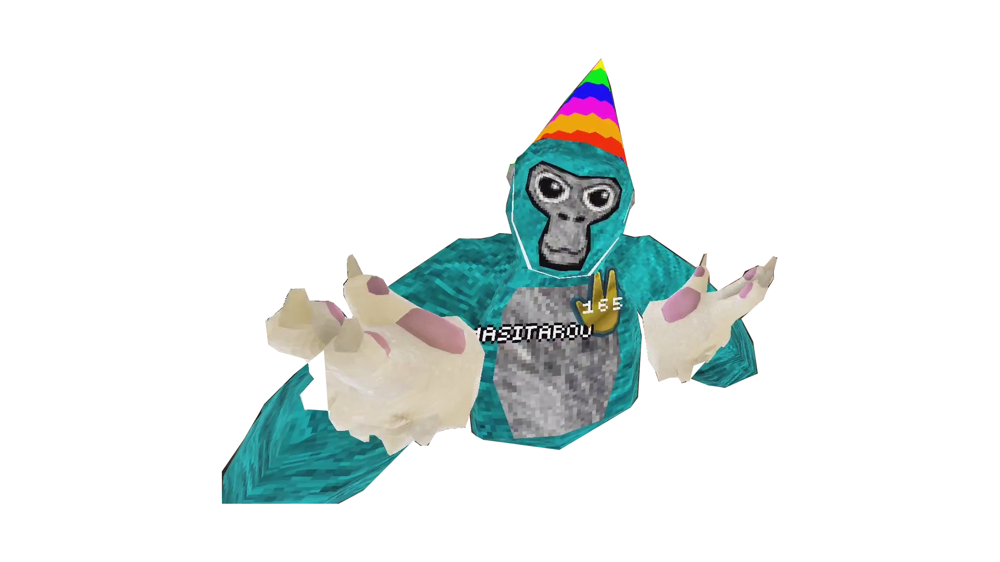

日本人向けゴリラタグウィキ
ヒント：ホームページに戻るには上の文字をクリックする
！注意！ このウィキは正しくない情報がある可能性があります
アップデートについて
ここでは私が紹介したアップデートを記事にして紹介していきます。
プライドジャムアップデート
このアップデートではフォレストの巨木やシティの内装などLGBTQを意味するレインボーがらになりました
このアップデートはアメリカなどでLGBTQのプライドジャムをテーマにしたゲームを開発するイベントで追加されました。
参考映像
ロストアンドファウンド
このアップデートではモンケブロックというマップにアクセスするためにある通路にあらたにロストアンドファウンドというかくれんぼするマップが追加されたアップデートです。
そしてプロップハント（prophunt)というゲームモードが追加されました。
参考映像
クリエイターフェス
このアップデートではゴリラタグのクリエイターたちについてのアップデートです。
売られたアイテムでは、有名クリエイターがつけてるアイテムが売られました。
そしてシティの二階にはスタジオという録画専用のエリアが追加されました。
映像用タブレットにヘッダーが追加されました。ここからシーズンごとにヘッダーのデザインが変わっていきます。
ランク
このアップデートでは新たにランクマップとランク要素が追加されました。
そしてアイテムに自分のランクによってデザインが変わるベルトと指輪が追加されました(1000シャイニー)
ランク用マップは昔のフォレストのマップで巨木（切り株）が紫色に変更されています。
テイクマイハンド！！
このアップデートでは結構前からあったエレベータがやっと動くようになり
モンケの手と手をつないで移動できるようになりました。これで初心者がいけない場所
などに連れて行けるようになりました。このときは個人が作ったアイテムが300円で売られるようになりました
カイトフェスト
このアップデートではフォレストなどのマップに凧揚げなどのカイトフェストの要素が追加されました
そしてローテーションマップという時々変わるマップが変わりました！そのマップの外観はバイユーという
今のロストアンドファンドのマップに似ている雰囲気になりました。
ヒートウェーブ
このアップデートではゴーストリアクターが怖くなって帰ってきました。
ゴーストリアクターでは新しいマップに新しいアイテムなどが追加されてモンスターが三体追加されました。
追加されたモンスターは電動ドリルを持ったモンスターと研究者と虫です。
ヒートウェーブ２
このアップデートでは公式ベータチャンネルで開発中の公式MODが期間限定で使えるようになりました。
そのベータチャンネルではゲームモードが今ではスーパーインフェクションになっているものが一つだけ
(カジュアルなどのモードが全部消えている）になっていた。
ブックフェア
このアップデートでは本をテーマとしたオブジェクトなどがフォレストなどのマップに置かれました。
このころからゴリラについているネームプレートの黒の縁取りが大きくなりました。
そしてシティが朝になり全体的に明るく見やすくなりました(シティ内)
Vスタンプ
このアップデートではVスタンプというVRのマップが一万行ったことを記念したアップデートです。主に変わったところは
昔のマップが公式により行けるようになったことです。
ハロウィンアップデート！！
このアップデートでは毎年恒例のハロウィンイベントで紫ルーシー、青ルーシー、赤ルーシーが期間限定で帰ってきました
そして一時的になくなっていた占いができるゴリラがアーケードの前からモンケブロックスの前に移動して帰ってきました！
トリック&トリート
このアップデートでは二か月前ぐらいにきていたMODのベータ版が正式な機能として帰ってきました。
そして一時的に日本語と日本語サーバーが追加されました(フォントや翻訳の精度から一回消えました)
フットボール
このアップデートではキャッチボールみたいなゲームができるエリアが塞がれて、
日本語が返ってきました。そして人が持っているカメラが見えるようになりました。
自分のアイテムの組み合わせが保存できるオフセットも追加されました。そしてさらに
帽子など自分の視点を邪魔するアイテムを表示するか非表示にするか選べるようになりました。
空の画質が格段に上がりました。